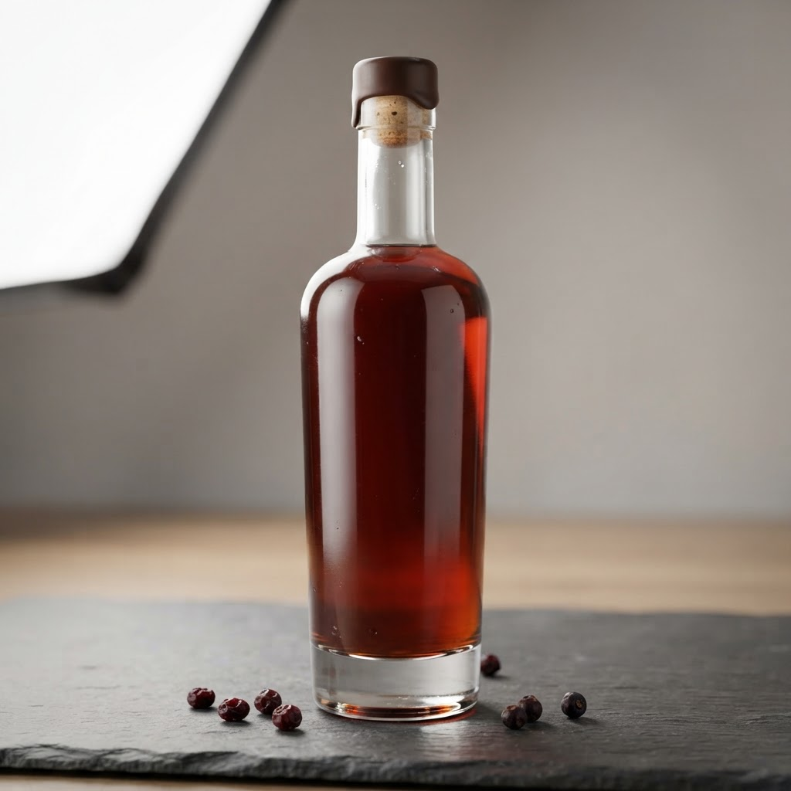
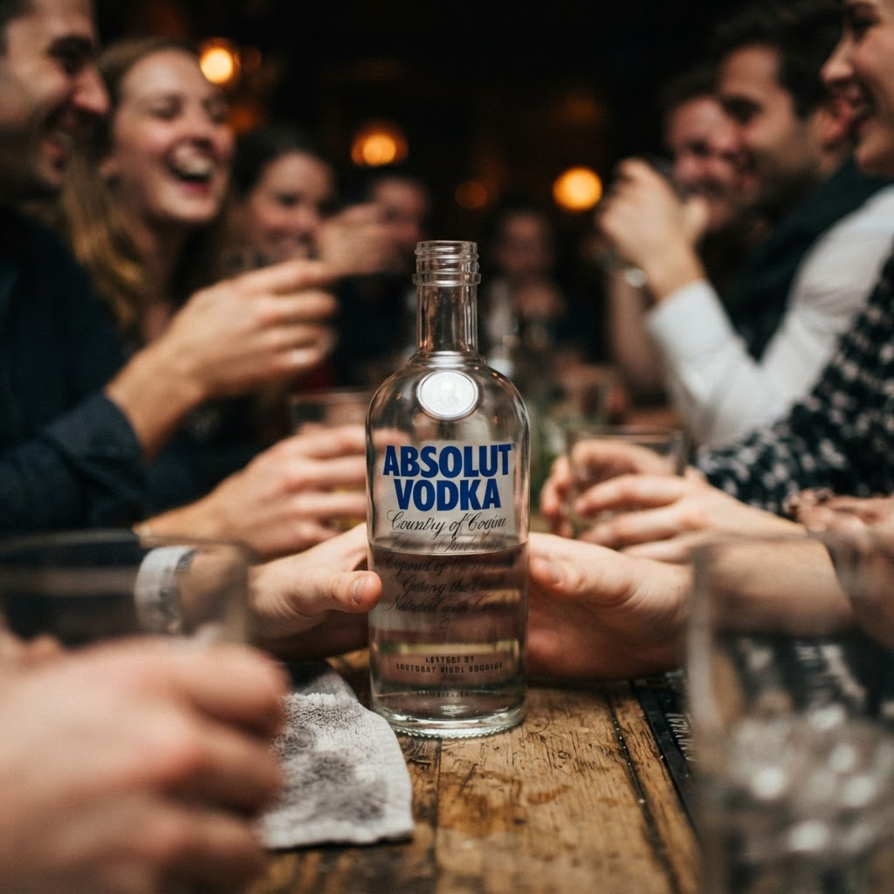

Сколько стоит купить в спб beluga hunting berry bitter в Красногвардейском районе

Красногвардейский район — это лабиринт из новостроек и старого фонда, где вечерний поиск нужного напитка часто превращается в испытание. Когда полки магазинов пустеют, спасает лишь круглосуточная курьерская служба, готовая привезти заказ прямо к двери за один час.
Сколько стоит купить в спб beluga hunting berry bitter в Красногвардейском районе
Читатель задается вопросом: где в Петербурге проще всего найти редкий биттер, если на часах уже глубокая ночь? В Красногвардейском районе ситуация неоднозначная. Поход в ближайший сетевой супермаркет до закрытия — вариант стандартный, но рискованный из-за вероятного отсутствия позиции на витрине. В этом случае цена складывается из стоимости товара и потраченного времени на поиск по микрорайону. Выбор в пользу розницы оправдан, только если вы оказались в шаговой доступности от крупного торгового центра. Однако, если цель — комфорт и гарантированный результат, поиск через специализированные онлайн-витрины выглядит рациональнее. Запрос на доставку через приложения исключает личные перемещения по темным дворам, а итоговая сумма заказа остается прозрачной. Важно понимать, что за скорость и курьерский труд в ночное время придется доплатить, однако этот расход компенсируется экономией сил. Разбор показывает, что покупка биттера через сервис доставки — это не переплата за бренд, а покупка услуги оперативной логистики, которая избавляет от необходимости самостоятельно проверять наличие товара в ночных лавках.
Сравнение способов доставки и цены
Рассмотрим кейс двух подходов. Первый путь: самостоятельный поиск. Вы обходите магазины района, тратите время, сталкиваетесь с ограничениями по времени продажи алкоголя и часто уходите с пустыми руками. Здесь вы не платите за доставку, но несете «скрытые расходы» в виде личного времени и риска неудачи. Второй путь: заказ через сервис ночной доставки за час. В этом сценарии стоимость продукта фиксирована, а наценка на логистику понятна заранее. Приложение сразу показывает наличие Beluga Hunting Berry Bitter, избавляя от гаданий. Вы оплачиваете не только напиток, но и скорость, получая заказ в руки в пределах часа. Для жителя густонаселенного Красногвардейского района второй вариант является единственно эффективным, так как исключает человеческий фактор и хаос ночного ритейла. Сравнение доказывает: если ваша цель — уверенность в получении товара без лишних передвижений по городу, то использование сервиса быстрой доставки является более выгодным и предсказуемым решением, чем попытка найти редкий напиток своими силами в ночное время.
Привезут ли напиток действительно за один час?
Современные службы доставки используют автоматизированные системы распределения заказов, закрепляя курьеров за ближайшими складами. В условиях Красногвардейского района при отсутствии экстремальных пробок время в пути до клиента редко превышает установленный часовой интервал. Ожидание оправдано, так как система отслеживания позволяет контролировать процесс в реальном времени.
Итог
Итог всегда один: назвать следующий шаг покупателю — оформить заказ и получить его в течение часа в своём районе.
Заказать доставку
Оформите заказ сейчас: привезём за 40-60 минут в любой район Петербурга, круглосуточно.
Призыв
Сколько стоит водка русский стандарт санкт петербург купить вКрасногвардейский район не спит, когда город укрывают сумерки. Мы обеспечиваем быструю ночную доставку напитков прямо к вашей двери всего за один час, чтобы …